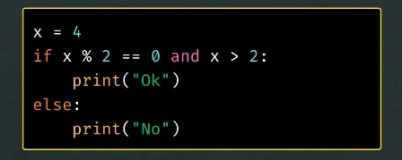

Como Funciona esse Quiz?
Este quiz foi criado para testar seus conhecimentos básicos de lógica e pensamento computacional (ou não).
Você encontrará diferentes tipos de perguntas, incluindo múltipla escolha e verdadeiro ou falso.
Respire fundo que também terá barreiras que coloquei com muito carinho para te incomodar e te desafiar.
Boa Sorte, !!
Pergunta 1:
O que é lógica de programação?
Pergunta 2:
Se “x = 5” e a condição é “x > 3”, isso retorna:
Pergunta 3:
Considere a sequência lógica onde cada número é obtido somando-se o dobro do número anterior.
A sequência começa em 3.
, qual é o quarto número da sequência?
Pergunta 4:
Há uma palavra que faz o código repetir seus passos como um viajante preso no tempo. Ela cria ciclos, laços e voltinhas sem fim. Qual é essa palavra misteriosa?
Pergunta 5:
Um algoritmo agenda sua próxima execução sempre adicionando 17 dias úteis à data atual, ignorando sábados e domingos. Se hoje fosse 13/07/1943, qual seria a próxima data de execução?Pergunta 6:
Por que NaN == NaN é false?
Pergunta 7 :
O que acontece se um algoritmo entra em um loop infinito?
Pergunta 8:
Por que o código imprime "Ok"?
Pergunta 9:
Em muitas linguagens, qual o resultado de:

Tabela de Pontuação
| Acertos | Resultado |
|---|---|
| 0 - 2 | Chorou no CSS. |
| 3 - 4 | O computador olhou e disse: ", vamos conversar…" |
| 5 - 6 | Aqui temos um código que roda, mas só quando ninguém está olhando. |
| 7 - 8 | oficialmente graduado em lógica nível "quase lá". |
| 9 | Agora sim, já dá para fingir que sabe programar em reuniões. |
Verifique suas Respostas:
Clique aqui para ver as respostas corretas
- Pergunta 1: Um conjunto de regras para pensar de forma organizada
- Pergunta 2: True
- Pergunta 3: 24
- Pergunta 4: While
- Pergunta 5: 05/08/1943
- Pergunta 6: Porque NaN nunca é igual a nada, nem a si mesmo.
- Pergunta 7: Ele trava até alguém interromper.
- Pergunta 8: Porque as duas condições são verdadeiras.
- Pergunta 9: true